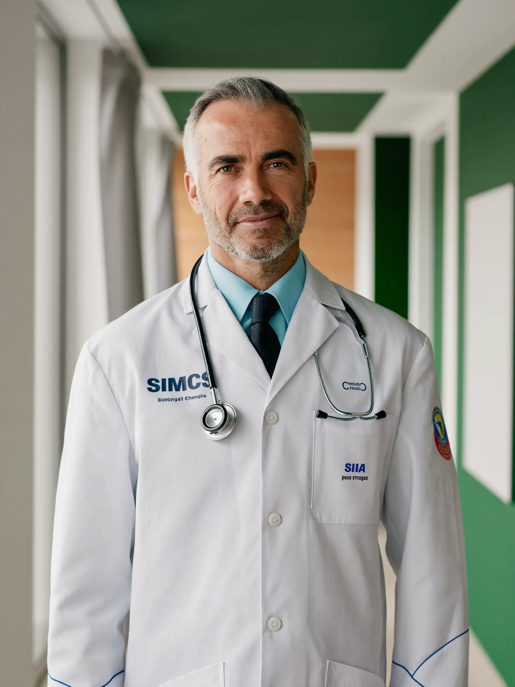

KardiyolojiHekimlerimiz
Her hekimimizin eğitim geçmişi, uzmanlık alanları ve çalışma günleri açıkça yer alır. Branşınızı seçerek uygun hekimi bulun, profilini inceleyip randevu oluşturun.
Branş:
12 hekim listeleniyor
 İç Hastalıkları
İç Hastalıkları
 Genel Cerrahi
Genel Cerrahi
 Çocuk Sağlığı
Kardiyoloji
Kadın Hastalıkları
Çocuk Sağlığı
Kardiyoloji
Kadın Hastalıkları
Ortopedi
Çocuk Sağlığı
İç Hastalıkları
Genel Cerrahi
Kadın Hastalıkları
Ortopedi
Bu branşta şu an listelenen hekim bulunmuyor.
Farklı bir branş seçebilir ya da uygun hekim için bizi arayabilirsiniz.
Bu demoda Prof. Dr. Selim Arıkan ve Uzm. Dr. Zeynep Aksoy için örnek profil sayfası hazırlanmıştır; tam sürümde her hekimin ayrı profili olur. Aradığınız branşta hekim bulunamadıysa 444 0 000'ı arayın; sizin için en uygun hekim ve saati birlikte belirleyelim.